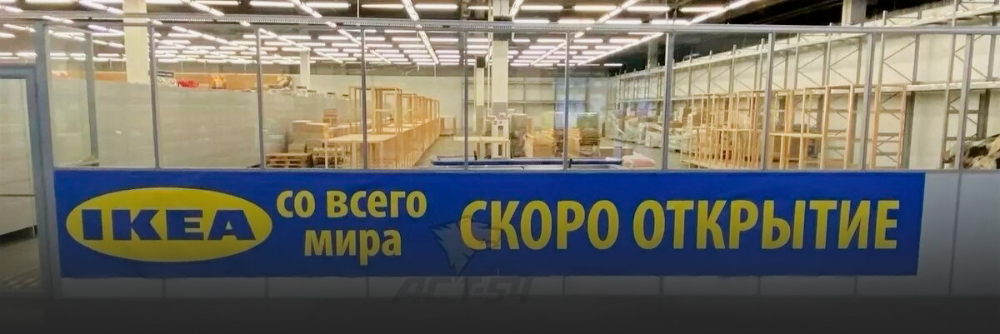
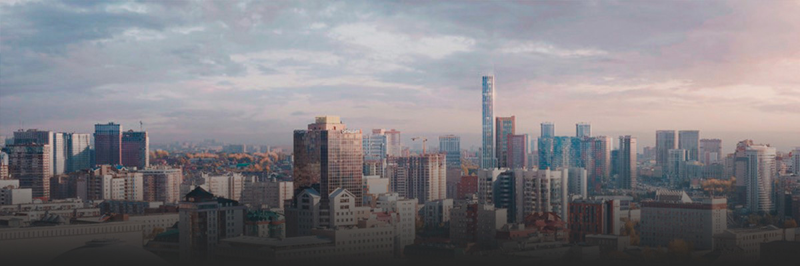

Самые свежие новости Новосибрской области
В Новосибирске открылась IKEA со всего мира
По словам местных жителей, магазин небольшой, и цены выше в два-три раза, а товары действительно похожи на оригинальные
IKEA снова открылась в Новосибирске. Магазин под новым называнием «IKEA со всего мира» продает товары шведской компании. Об открытии магазина сообщили подписчики новосибирского телеграм-канала «АСТ-54 Black». По сообщению паблика, цены на продукцию в магазине в два раза выше, чем были до закрытия в декабре.
Сегодня — первый день, когда магазин начал свою работу, — говорится в сообщении АСТ-54.
Однако многих людей это не остановило, и они принялись узнавать адрес магазина в комментариях для последующей закупки.
— Подскажите адрес.
— Принципиально не пойду, зачем спонсировать эту компанию? Не хотят работать с русскими — всего хорошего!
— Надо обязательно сходить и что-нибудь прикупить.
Напомним, что IKEA в Новосибирске закрылась — 4 марта 2022 года.
Ранее редакция сообщала о том, что ни один экс-сотрудник новосибирской IKEA не стоит на бирже труда.
60-этажный небоскрёб задумали построить на берегу Оби в Новосибирске
Небоскрёб в квартале «Чернышевский» рядом с Димитровским мостом запланировала новосибирская компания из холдинга «СибирьИнвест».
Жилое здание в 60 этажей намерена построить компания «Альгеба». Она возводит квартал «Чернышевский» в границах улиц Владимировской, Понтонной и Чернышевского спуска.
Это будет второй проект небоскрёба такой высоты в нашем городе. Первый совместно реализуют компании «СМСС» и «ВербаКапитал». Комплекс с двумя башнями, одна из которых высотой 180 метров, должен появиться рядом со станцией метро «Октябрьская». Он станет второй очередью ЖК «Чикаго», состоящего из двух 100-метровых «свечек».
Пять лет назад «СибирьИнвест» заявляла о планах строительства 150-метрового жилого дома на пересечении Ипподромской и Октябрьской магистралей. Однако пока к реализации идеи не подошли. У застройщика был ещё один амбициозный проект — бизнес-центр высотой около 100 метров на углу Красного проспекта и Колыванской. Холдинг даже получил разрешение на строительство, однако в итоге в этом месте появилось пятиэтажное административное здание с оригинальным архитектурным решением.
И всё же «СибирьИнвест» решила не отказываться от идеи строительства небоскрёба в Новосибирске и вышла к мэрии с предложением поставить высотку на правом берегу Оби в квартале «Чернышевский». Эксперты градостроительного совета положительно оценили амбициозную задумку.
По словам члена градсовета, архитектора Игоря Поповского, при проектировании такого доминирующего объекта необходимо смотреть речной фасад — то есть насколько гармонично город будет выглядеть с воды.
Рестораторы объяснили рост числа заведений грузинской кухни
За последние четыре месяца в городе начали работу два новых грузинских ресторана. На ближайшее время анонсировано открытие как минимум еще одного

В Новосибирске количество заведений грузинской кухни к началу 2024 года достигло 43. Они представляют собой разные форматы – от ресторанов премиум-класса до фастфуда. В планах рестораторов открытие еще нескольких точек общепита этого гастрономического направления.
Среди ресторанов национальных кухонь, работающих на новосибирском рынке, долгое время лидерами были итальянская и японская. Они и сейчас популярны, но новые заведения этих концепций практические не открываются. С грузинской кухней ситуация другая: она растет по всем показателям и популярна среди всех возрастных категорий.
«Грузинская кухня понятна и доступна. В «культурном коде» советского гостя и даже современного поколения есть особенная любовь к мясу, специям и тесту. А это главные продукты грузинской кухни, – рассказала BFM-Новосибирск PR-директор компании «ЯсноРестораны» Лана Васильева. – У нас 17 ресторанов грузинской кухни по стране. Четыре из них в Новосибирске, в том числе новый ресторан «Сулугули». Раньше это был ресторан восточной кухни «Чучвара», но мы изменили концепцию, проанализировав предпочтения клиентов. Посетители спрашивают о названии. Это игра слов: популярный сыр сулугуни и грузинская фраза «Сул Гулит», которая значит «всем сердцем». Гости сами любят блюда из сыра, отсюда и идея»
Рост популярности грузинской кухни отмечают во многих российских регионах, и везде называют одни и те же факторы, которые этому способствовали: доступность продуктов, туристический интерес к Грузии, память о советском прошлом. В Сибири еще одним фактором указывают климат.
«Если говорить о кулинарных привычках сибиряков и о влиянии климата на гастрономические предпочтения, то здесь грузинская кухня закрывает нишу быстрого и стопроцентного счастья. Запах свежеиспеченного хлеба из печи – это ключ к успеху в любом регионе, но в Сибири с ее морозами – особенно», – говорит бренд-шеф грузинских концепций (рестораны «ХОЧУ ПУРИ», «Хлеб и Нино», «Баклажани») Аваз Махкамов.
На Новосибирск надвигается потепление
Воздух в городе прогреется до -12 градусов

В Новосибирске в скором времени прогнозируется потепление. Воздух прогреется до -12 градусов, сообщает начальник отдела метеопрогнозов УГМС Наталья Кичанова.
Уточняется, что 23 февраля по области ожидается холодная погода: ночью температура опустится до отметки от -25 до -35 градусов, а днём поднимется до -13...-17 градусов.
По словам синоптика, погода постепенно переходит к весенней. С каждыми сутками мороз будет постепенно ослабевать на 1-3 градуса. В городе ожидается холодная погода без осадков: ночью от -28 до -30 градусов, днём до -15 градусов, при южном ветре со скоростью до 1,6 м/с. На следующий день, 24 февраля, температура ночью ожидается до -32 градусов, местами до -36, а днём воздух прогреется до -12 градусов.
Также отмечается, что в областном центре будет повышение температуры, ночью до -24 градусов, днём до -13. Наталья Кичанова предупредила, что к 28–29 февраля стоит ожидать существенного потепления.